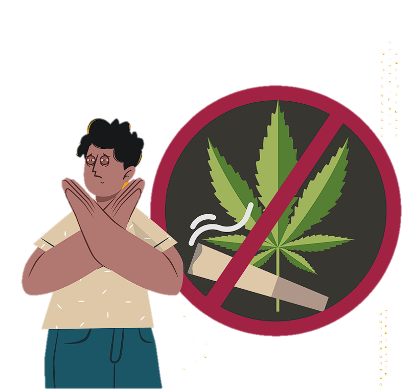

PROPÓSITO
Dar a conocer las características, los efectos, los impactos negativos y los daños irreversibles a la salud
asociados al consumo de cannabis.
¿QUE ES?
La cannabis es una planta que contiene sustancias llamadas cannabinoides con propiedades que
modifican el comportamiento y alteran la percepción del entorno. Esta planta contiene al menos
750 compuestos químicos y unos 104 cannabinoides diferentes.
Los principales cannabinoides presentes en esta planta son el 9-tetrahidrocannabinol (THC), el
cannabidiol (CBD) y el cannabinol (CBN). El THC es el compuesto responsable de los efectos
psicoactivos; el CBD es un compuesto no psicoactivo con algunas propiedades terapéuticas;
suele emplearse como analgésico bajo supervisión médica.
A nivel mundial, la cannabis es la sustancia ilegal de mayor uso con
209 millones de personas consumidoras. En lo que respecta a los problemas de salud asociados a
su consumo, aproximadamente, 13.1 millones de personas presentan trastornos.
El consumo de cannabis antes de
los 15 años es un factor predictivo del abandono escolar temprano y de predisposición al consumo de otras drogas ilícitas.
Las personas que se inician en el consumo de cannabis tienen mayor probabilidad de usar otras sustancias. Existen dos factores que
influyen en esto:
1. Los espacios para adquirir cannabis son los mismos donde se
comercializan otras sustancias
ilegales, lo que facilita el acceso
a éstas.
2.Los efectos psicológicos del consumo de cannabis aumentan el
interés de las personas jóvenes
por otras sustancias.
De igual manera, existen factores
psicoemocionales como baja autoestima, autocontrol insuficiente
y escaso desarrollo de habilidades
para la vida que inciden en la transición del consumo esporádico a
una dependencia o adicción.

Modo de Consumo
La forma habitual de consumo de la cannabis es por vía oral, ingerida o fumada, siendo esta última la forma más extendida.
Sin embargo, cada vez es más popular consumir cannabis mediante vaporizadores y en extractos de
alta pureza de THC. Aunque la afirmación de una mayor seguridad
en su consumo por esta vía no tiene suficiente evidencia científica
Efectos Fisicos
Los efectos físicos que se pueden experimentar son un ligero aceleramiento del ritmo cardiaco, dilatación de los vasos sanguíneos,
enrojecimiento de los ojos, aumento del apetito y sequedad en la boca, así como mareo y pérdida de la coordinación.
Efectos psicológicos
Suele presentarse una sensación de relajación o euforia, fatiga, disminución de la concentración,
alteración de los sentidos y de la
percepción del tiempo, alteraciones en el tiempo de respuesta, en
la atención y en la capacidad de
toma de decisiones.
Consecuencias no deseadas
El consumo habitual de cannabis puede generar un estado de apatía y falta de motivación para realizar tareas. Además, las personas
usuarias pueden experimentar un estado depresivo, que ocasiona falta de interés o satisfacción. También pueden experimentarse
episodios de ansiedad y paranoia al consumir cannabis, aun en bajas dosis. Asimismo, se pueden
desencadenar desórdenes mentales latentes como psicosis o esquizofrenia en personas con predisposición genética.
Las alteraciones de procesos mentales como la disminución de la
concentración y la falla de la memoria a corto plazo son consecuencias no deseadas que ocurren
en cada consumo.
Uno de los efectos no deseados más comunes es la abrupta disminución de la presión arterial. Por
ello, la persona siente un malestar generalizado que se agudiza con
náuseas, mareos, vómito, piel pálida, ansiedad y una profunda desorientación.
Efectos después de su consumo
La cannabis provoca un síndrome de abstinencia caracterizado por síntomas físicos como mareos,
dolor de cabeza, dolor de extremidades, temblores, sudoración, temperatura corporal elevada
y escalofríos. Asimismo, los síntomas psicológicos pueden ser intensos y manifestarse como
trastorno del sueño, irritabilidad, depresión, inquietud, ansiedad, agresividad y un fuerte deseo de consumir nuevamente.
Principales daños irreversibles a la salud
Los trastornos en la salud causados por el consumo de cannabis
inician con el desarrollo de una dependencia o adicción, caracterizada por la pérdida de control en
el consumo y la aparición del síndrome de abstinencia.
A corto plazo, las consecuencias
que pueden ocasionar la muerte son brotes psicóticos, conductas
suicidas, accidentes cerebrovasculares o paros cardiacos.
Uno de los mayores riesgos asociados a los efectos iniciales es la autolesión. La intensa percepción
de alteración del entorno y la modificación del comportamiento
son factores que provocan lesiones físicas entre las personas consumidoras.
A largo plazo, se presentan las siguientes consecuencias irreversibles: alteraciones de la conducta
y trastornos de la salud mental,
como psicosis, depresión, ansiedad y conducta suicida; afecciones cardiovasculares, Enfermedad Pulmonar Obstructiva Crónica
(EPOC) y cánceres del aparato respiratorio.
¡NO TE ARRIESGUES CON LAS DROGAS!
Ten presente que:
• El consumo de cannabis antes de los 15 años es un factor
predictivo del abandono escolar temprano y predispone al
consumo de otras drogas.
• El consumo habitual de cannabis genera un estado de apatía, falta de motivación, de interés y de satisfacción.
• Su consumo prolongado puede producir psicosis, depresión, ansiedad, enfermedades cardiovasculares y cánceres
del aparato respiratorio.
Consecuencias legales
Desde el 31 de mayo del 2022 se prohibió la comercialización de vapeadores, SEAN y cualquier dispositivo con usos similares en todo
el país. De esta manera, la venta y adquisición de estos productos tendrá una sanción jurídica en
cualquier estado de la república mexicana. Las multas van desde 150,000 hasta 300,000 pesos por su decomiso.